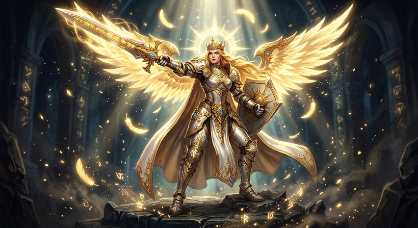

✦
CHRONIQUES D'ASTRIA
Initialisation du Sanctuaire Céleste…

Niv. 42
Seigneur Astria
Archonte
EXP 64%
⚡
PC ÉQUIPE
488 879
AUTO-BOT ×2 · ∞ FARM ILLIMITÉ
60 FPS
0 Énergie · Patrouille astrale active…
Or Impérial
+419/s
125 400
+
Cristaux Astraux
3 600
+
Insignes d'Honneur
840
+
📜
v1.2
🔊
⚙️
🔮
SANCTUAIRE D'ASTRIA
Temple d'Invocation
∞ Progression Illimitée
✕